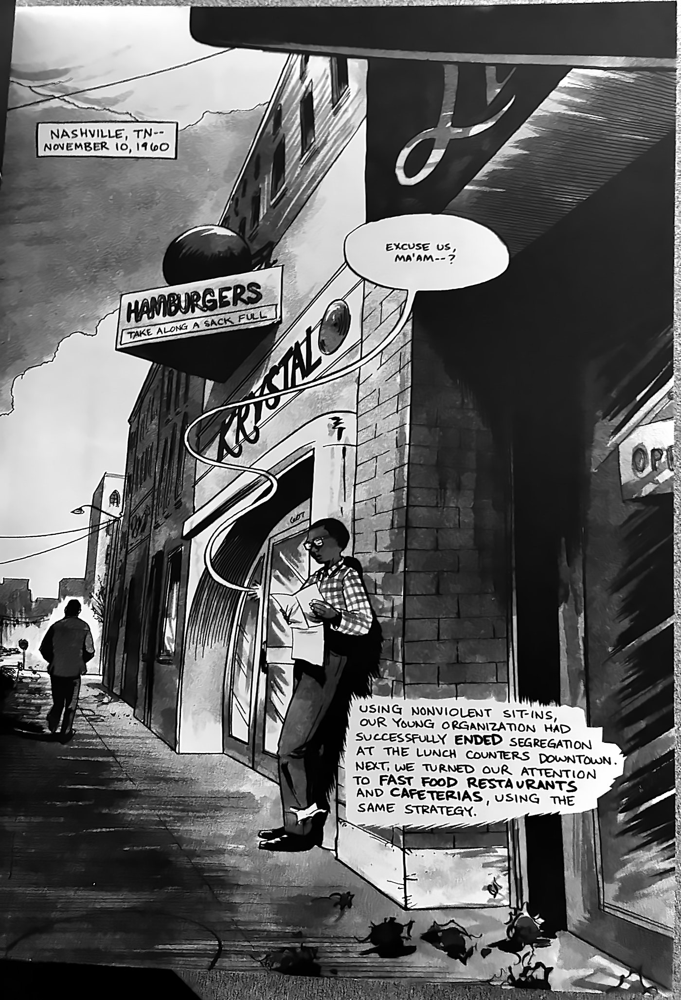

How it works: read the page on the left → predict what happens next (no wrong answer) → keep reading → get the check right. Done = 5 green parts, then turn in at the bottom.
Content note: This book shows real violence from 1960–1963. Reader pages 8–11 show a mob beating the Freedom Riders. A few speech bubbles are covered with black bars because the attackers used a racist slur.
Word help (tap to open)
- Segregation = keeping people apart by race
- Nonviolence = protesting without ever hitting back
- Sit-in = sitting where you're "not allowed" and refusing to leave
- Freedom Riders = Black and white riders who rode buses together into the South
- Federal = the national government in Washington, D.C.
- Fumigator = a machine that sprays poison to kill bugs
- Tactic = a tool or move you use to win

Click the page to make it bigger.
Turn in your work
Your work saves on this device, so you can come back later. Your teacher sees it after you turn it in.
Comic: March: Book Two (2015), written by John Lewis and Andrew Aydin, art by Nate Powell (Top Shelf Productions). Reader pages are the book's pages 9–11, 13–14, 30, 72–73, 75, 77, 79, 103–104, 126–129, 157, and 164–165, photographed from a classroom copy for class study. Four words in speech bubbles (book pages 73 and 127) were covered because they print a racist slur; the rest of the art is unchanged.